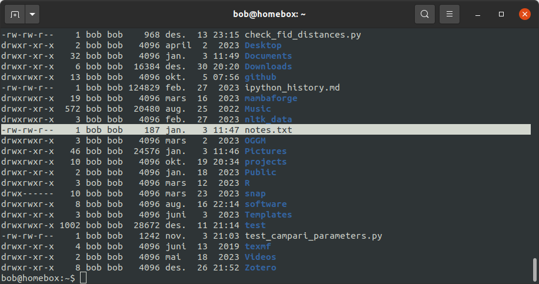
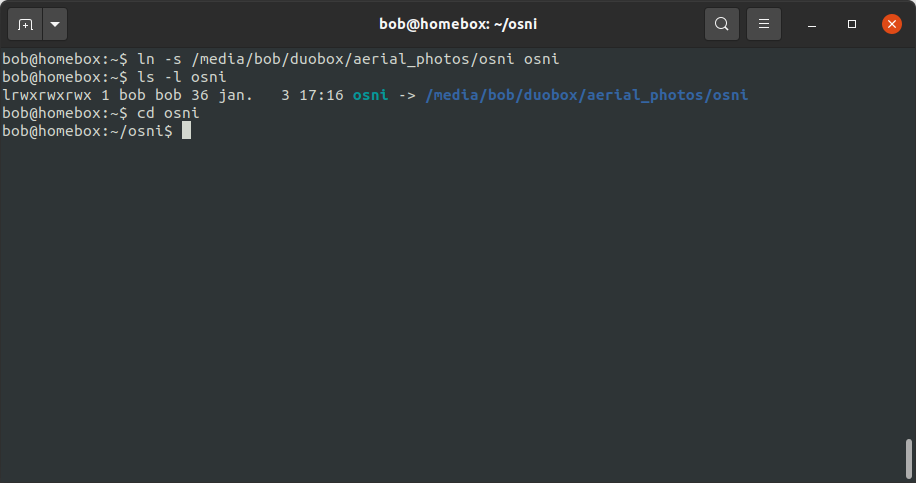

working with files#
Now that we have seen how we can navigate the file system and create new directories, let’s take a closer look at how we can create and manipulate files and directories from the shell.
text editors#
We’ll start by using a text editor to create a new text file.
Note
A very important thing to note here is that “text” really does mean “text”. A text editor only works with plain character data: no formatting, no images, no tables, no bells and/or whistles.1
Examples of common text editors available for Windows include Notepad (installed by default) and Notepad++.
I recommend using Notepad++ (available here), because it offers many useful features beyond the basic level provided by Notepad. In a pinch, though, Notepad will still get the job done - there’s probably a reason it’s still bundled with Windows after over four decades.
nano#
For this example, we’ll be using (nano), a free text editor that ships with almost all bash terminal emulators.
nano is called directly from the command prompt. As with other programs we have looked at, we can use the --help
flag to learn more about the options available:
nano --help
As you can see from the output, we can call nano on its own, or by specifying a file name. Let’s launch nano on its own - we can specify a file name when we want to save the file:
nano
{kind=link}
In this file, we can add some important notes about using the shell so far - feel free to add your own:
{kind=link}
{kind=link}
{kind=link}
{kind=link}
the “meta” key#
You should also see a few key combinations with the “meta” key, indicated by M - for example, the command to undo
changes is M-U.
The “meta” key will most likely be different for different operating systems. For OSX, it is usually the Esc
(Escape) key; for Windows and most Linux distributions, either the Esc key or the Alt key can be used.
Try to undo your most recent changes using M-U, then re-do them using M-E - you should see that the message
“Undid {change}” appears:
{kind=link}
followed by “Redid {change}”:
{kind=link}
exiting#
Finally, to exit the program, press both the Ctrl and X keys at the same time (i.e., ^X). Note that if you
have any unsaved changes to the file, you will be prompted to save them - you can choose to do so (Y), or to discard
those changes (N), or to cancel exiting the program (^C).
file permissions#
Now that we have created a file, let’s have a look at who is allowed to do what with the file - that is, the permissions that are set on the file.
From the shell, we can use the ls command, along with the -l option, to list more information about the files
in the current directory:
ls -l
When you enter this command, you should see something like the following:
{kind=link}
Each file/directory in the current directory is listed on a separate line, along with additional details. In the
screenshot above, I’ve highlighted the line corresponding to the notes.txt file:
-rw-rw-r-- 1 bob bob 187 jan. 3 11:47 notes.txt
Each block in the line tells us the following information:
the file permissions (
-rw-rw-r--);the number of links (names) for the file (
1);the “owner” of the file (
bob);the “group” of the file (
bob);the file size in bytes (
187);the date and time the file was last updated (
jan. 3 11:47);and finally, the file name (
notes.txt).
Some of these should be fairly self-explanatory (i.e., the file owner, size, last updated, and name). The permissions, though, are probably a bit confusing.
The permissions block is 10 characters long - the first character in the permissions block indicates the type of file. The most common types that you will find are most likely:
d- for directories;l- for links;-- for other files.
The remaining nine characters are divided into three triplets that indicate the types of permissions for the file at
different levels: user (the “owner” of the file, represented by a u), group (g), and other (o), displayed
in that order.
Files (and directories) have three different types of permissions: reading, writing, and execution:
type |
explanation |
symbol |
octal |
|---|---|---|---|
reading |
reading the contents of files/directories |
|
4 |
writing |
modifying the contents of files/directories |
|
2 |
execution |
run a file as a program/enter or run commands in a directory |
|
1 |
If a type of permission is granted for a given level, that symbol (r, w, or x) will be shown in the
permission block; if it is not, a dash (-) will be visible in its place.
For example, notes.txt has the following permissions set:
the file owner (
bob):rw-, indicating that the userbobhas both read and write permission for the file.the file group (
bob):rw-, indicating that members of the groupbobhave both read and write permission for the file;all other users:
r--, indicating that other users may only read, but not modify, the file.
In the next section, we’ll see how we can change permissions for a file.
changing permissions#
To change or modify permissions for files and directories, we use the chmod command.
Warning
As a general rule, it’s best to avoid granting full permissions for a file or directory to all users, as it means that any user on the computer has the ability to modify (or delete!) the file/directory.
using characters#
The basic structure of the chmod command is:
chmod who=permissions file
For example, to change notes.txt so that “other” users (o) can read and modify the file, we would use the
following:
chmod o=rw notes.txt
{kind=link}
In the screenshot above, we can see how this has changed the permissions block using ls -l. Before running
chmod, the output of ls -l was:
-rw-rw-r-- 1 bob bob 187 jan. 3 11:47 notes.txt
indicating that “other” users could read (but not write) the file.
After running chmod, the output is:
-rw-rw-rw- 1 bob bob 187 jan. 3 11:47 notes.txt
indicating that other users now have read and write permissions for the file.
Note that by setting permissions in this way, we have to be sure that we include all of the permissions we want for a given level - if we leave one out, it won’t be set. For example, this:
chmod o=w notes.txt
will change the “other” permissions to be write-only:
{kind=link}
For this reason, we can add to (or remove from) the existing permissions using + (or -).
For example, we could add write permissions for other users like this:
chmod o+w notes.txt
{kind=link}
and we can remove write permissions like this:
chmod o-w notes.txt
{kind=link}
We can also specify multiple levels at a time - for example, to remove write permissions for everyone but the file
owner, we could use the following command:
chmod u=rw,g-w,o-w notes.txt
{kind=link}
And finally, if we want to set the same permissions for all levels, we can use a:
chmod a=rw notes.txt
{kind=link}
using numbers#
In addition to the symbolic representation (r, w, and x), we can use the octal representation to set the
permissions for a file.
To help explain this, let’s view a single permission block as a series of binary switches, with “1” indicating that the permission is given, and “0” indicating that the permission is absent:
rwx -> 111
rw- -> 110
r-x -> 101
r-- -> 100
… and so on.
In binary notation, the number 111 is equal to 7 - and so, the octal value (and the decimal value) corresponding to
rwx permissions is 7 (= 4 + 2 + 1, the sum of the octal values for each permission type). Similarly, the binary
value 110 is equal to 6, and the octal value for rw- is 6 (= 4 + 2 + 0)
By representing each level of permission as a single octal value (one each for user, group, and other), we have a convenient way of representing a given permission setting. For example, let’s look at the original permission setting of notes.txt again:
-rw-rw-r-- 1 bob bob 187 jan. 3 11:47 notes.txt
Here, the u level permissions (rw-) corresponds to an octal value of 6, the g level permissions (rw-)
correspond to an octal value of 6, and the o level permissions (r--) correspond to an octal value of 4. This
means that we can represent this permission setting as the octal value 664.
In fact, if you enter the following command:
chmod 664 notes.txt
you should notice that the permissions do not change:
{kind=link}
Note that we are only able to set permissions for all levels using the octal representation - we can’t add/remove
permissions using + or -, and we can’t specify levels using u, g, or o.
moving files (and directories)#
Now that we’ve seen how we can view and edit permissions, we’ll look at a few other useful commands for manipulating files and directories from the shell.
We’ll begin with mv, which is used to move (or rename) files and directories.
moving#
To move a file (or multiple files) to a different directory, we use the following command:
mv file [file2 ...] directory
Note
If we have more than two arguments to mv, the final argument must be an existing directory - if it is not,
mv will exit with an error.
For example, let’s say that we wanted to move notes.txt to the Documents directory:
mv notes.txt Documents
Run this command, then use ls to confirm that the file (a) is no longer in the current working directory, and (b)
is in the Documents directory.
Warning
Note that if directory does not already exist, mv will simply rename the file to the “directory” name given,
so be sure to pay attention to your directory names!
renaming#
As noted above, we can also use mv to rename existing files:
mv file1 file2
Warning
Note that if file2 already exists, it will be silently replaced (i.e., there will be no warning) by the contents
of file1 – remember to be very cautious when using this command!
To avoid this, you can also use the -i option, which will prompt you to confirm whether you want to replace an
existing file:
{kind=link}
We can also use mv to rename directories:
mv directory1 directory2
Note
If directory2 already exists, directory1 will be moved into directory2.
copying files#
To copy files, we use the cp command - for example, to copy file1 to file2, use the
following command:
cp file1 file2
Warning
As with mv, if file2 already exists, it will be silently replaced by the contents of file1. To avoid
this, you can use the -i option, which will prompt you to confirm whether you want to replace the existing
file.
We can also use cp to copy file(s) into a directory:
cp file [file2 ...] directory
This will copy the contents of file to directory/file (and file2 to directory/file2, and so on).
copying directories#
To copy entire directories, we can’t simply use cp:
{kind=link}
Instead, we need to use the -r (for “recursive”) option:
cp -r directory1 directory2
Note
If directory2 does not exist, it will be created with this command (and filled with the contents of
directory1). If it exists, directory1 will be copied into the existing directory directory2.
wildcards#
What if we want to manipulate many files at once, without having to explicitly type them all out? We can do this by using wildcards: special characters that allow us to specify groups of filenames based on a pattern of characters.
The main wildcards that you will use are listed below:
wildcard |
meaning |
|---|---|
|
any number of characters |
|
any single character |
|
any character that is a member of the set |
|
any character that is not a member of the set |
Sets of characters can either be expressed:
explicitly (i.e.,
[abc]would match a, b, or c);as a range (i.e.,
[0-5]would match numbers 0, 1, 2, 3, 4, or 5);
or by using POSIX character classes, such as the following:
POSIX class |
meaning |
|---|---|
|
any alphanumeric character |
|
any alphabetic character |
|
any numeric character |
|
any uppercase alphabetic character |
|
any lowercase alphabetic character |
We can also combine different wildcards to create more complicated wildcard expressions. The table below shows a few different examples of patterns and what file(s) they would match:
pattern |
matches |
|---|---|
|
all filenames |
|
any filename that ends with the characters |
|
any filename that starts with |
|
any filename that starts with |
|
any filename that starts with |
|
any filename that does not start with a lowercase alphabetic character |
Any command that can accept filename arguments (i.e., ls, mv, cp) can be used with wildcard arguments. Most
of the time, the shell will “expand” the wildcard expression (create a list of filenames matching the wildcard) before
it runs the command, meaning that the command only sees the list of filenames matching the wildcard, rather than the
wildcard expression itself.
symbolic links#
Copying creates a new file (or directory) on the disk, which means that it increases the amount of disk space used. We can also create a symbolic link (symlink) to create a file (or directory) that points to some other file or directory in the filesystem.
To do this, we use the ln command, along with the -s option2:
ln -s original link
We can then use that link as we would any other file or folder:
{kind=link}
In the output of ls -l above, you can see that the link is displayed differently to other folders, both in
color, but also by indicating what file or directory the link points to.
removing files#
Warning
In the Unix shell, there is no “recycle bin” to recover deleted files/folders - once you use rm to remove
something, it’s gone.
Be sure to use this command with caution!
To delete (remove) files, we use the rm command:
rm file
As with copying, in order to remove a directory, we need to use the -r option:
rm -r directory
notes#
- 1
This is not to say that text editors cannot display text using particular styles, such as syntax highlighting. In fact, most text editors can be configured for syntax highlighting, which is especially useful for editing scripts.
- 2
Without the
-soption,lncreates a hard link rather than a symbolic link. In effect, a hard link creates a new file in the filesystem with a link to the same space on the disk. A symbolic link is a file that links to a different name in the filesystem, similar to a shortcut in Windows.